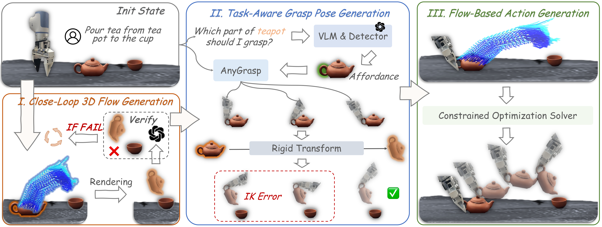
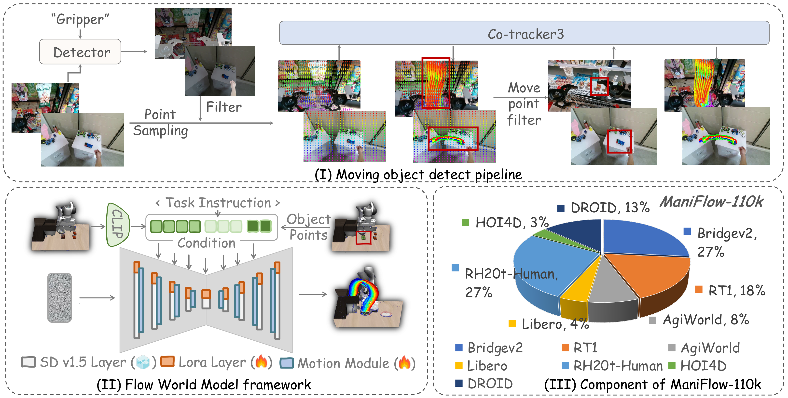
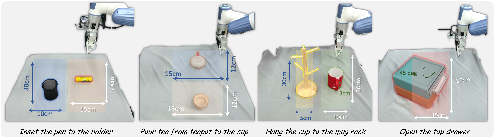
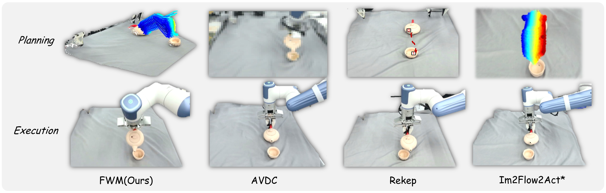

3DFlowAction: Learning Cross-Embodiment Manipulation from 3D Flow World Model
目录
1. 论文速览
| 论文要解决什么 | 机器人数据动作空间不统一，例如关节角、末端位姿、坐标系和硬件形态各不相同，导致跨机器人学习困难；同时直接从视频生成未来 RGB 状态又容易受背景、机械臂外观和 2D 平面限制影响。论文要解决的是：能否用一种对象中心、3D、跨 embodiment 的运动表示，从人类和机器人视频中学习可用于真实机器人操作的动作线索。 |
|---|---|
| 作者的方法抓手 | 核心抓手是 3D optical flow。作者构建 ManiFlow-110k，将开源人类/机器人视频中的被操作物体运动抽成 3D 光流；训练一个基于 AnimateDiff 的 3D flow world model，按语言和当前场景预测被操作物体未来 3D 运动；再通过 rendering + GPT-4o 验证形成闭环规划，并把 3D flow 作为优化约束求解末端执行器动作。 |
| 最重要的结果 | 四个真实操作任务总成功率达到 70.0%，高于 AVDC 20.0%、ReKep 20.0%、Im2Flow2Act* 25.0%；与模仿学习方法相比，3DFlowAction 为 70.0%，高于 PI0 50.0% 和 Im2Flow2Act 27.5%。跨平台上，Franka 67.5%、XTrainer 70.0%，且不需要硬件特定微调。 |
| 阅读时要注意的点 | 重点不是“又一个 world model”，而是 3D flow 是否真的能作为统一动作接口。要特别看：2D flow 与 3D flow 的差异、GPT-4o rendering 验证是否可靠、optimization policy 是否能处理接触/遮挡/非刚体，以及实验只有每任务 10 次 trial，统计稳定性需要谨慎。 |


2. 动机与问题定义
2.1 为什么需要 3D flow
作者从人类操作的直觉出发：人在执行“把杯子挂到杯架上”之前，往往先想象物体在空间中如何移动，而不是先想关节角怎么变化。这个物体运动轨迹对人类和不同机器人都是相对通用的。因此，论文把“物体未来 3D 运动”当成 embodiment-agnostic 的 action representation。
相比 RGB 视频 world model，3D flow 更对象中心，能减少背景和机器人外观的干扰；相比 2D optical flow，3D flow 能表达深度方向移动、旋转、倾倒等 3D 轨迹，对倒茶、插笔、挂杯这类任务尤其重要。
2.2 问题设定
输入是当前 RGB 观察、任务语言和初始物体点集，输出是时序 3D optical flow：
其中前两个通道为图像平面 2D 坐标，第三个通道为深度，第四个通道为 visibility。该 flow 描述被操作物体表面点在未来各时刻的 3D 位置变化。
之后，系统不训练一个硬件绑定动作头，而是把 flow 变成约束函数，通过优化求解一串 end-effector poses in SE(3)。
2.3 贡献定位
- 提出 3DFlowAction，将 3D optical flow 作为统一、对象中心、跨 embodiment 的机器人操作表示。
- 构建 ManiFlow-110k，通过 moving object auto-detect pipeline 从多源人类和机器人视频中合成 110k 个 3D flow 样本。
- 训练 3D flow world model，从大规模 flow demonstrations 中学习语言条件下的物体 3D 运动模式。
- 提出 flow-guided rendering + GPT-4o 验证的闭环规划，以及 task-aware grasp pose generation 和 flow-conditioned optimization policy。
- 在四个复杂真实任务、跨机器人平台、OOD 物体和背景上验证泛化。
4. 方法详解
4.1 ManiFlow-110k: 从原始视频抽取 3D flow
论文首先需要大量“物体如何运动”的数据。开源机器人/人类视频常有杂乱背景、相似物体和机械臂夹爪，标准 detector 很容易检测错。作者提出 moving object detection pipeline：
- 用 Grounding-SAM2 在第一帧分割 gripper mask。
- 在第一帧全图采样点，并排除落在 gripper mask 内的点。
- 用 CoTracker3 跟踪这些点，找出视频中显著运动的点。
- 用这些运动点的最大 bounding box 定位被操作物体。
- 再次用 CoTracker3 提取物体 2D optical flow。
- 必要时移除 camera motion flow。
- 用 DepthAnythingV2 预测深度，将 2D flow 投影到 3D。
作者在 BridgeV2 上验证该 pipeline 的 moving object detection accuracy 超过 80%。最终从 BridgeV2、RT1、AgiWorld、Libero、RH20T-Human、HOI4D、DROID 等开源数据生成 110k 个 3D flow 实例。

4.2 3D Flow World Model
模型目标是根据初始 RGB observation、任务 prompt 和初始点 $F_0$，生成时变 3D flow $F$。作者沿用 Im2Flow2Act 的思路，使用 AnimateDiff 作为 optical flow generator，但做了关键调整：
- RGB observation 和 task prompt 用 CLIP encoder 编码。
- 初始点 $F_0$ 用 sinusoidal positional encoding。
- 不把 3D flow 压缩进 Stable Diffusion 的 image VAE latent，因为作者发现 VAE 难以编码深度信息。
- 直接把 3D flow 输入 U-Net，并训练 motion module 建模时间动态。
- SD 主体只插入 LoRA 层，以保留预训练生成能力；motion module 从零训练。


4.3 Closed-Loop Motion Planning
3D flow 预测仍可能出错。为提高稳定性，作者设计 object-centric target state rendering machine。设第一时刻的 flow points 为 $P_1$，最后时刻为 $P_2$，通过 SVD 估计二者之间的刚体变换：
然后将 $T$ 应用于被操作物体初始点云，得到预测目标状态，再放回当前 3D scene point cloud 并重投影为 2D 图像。最后把任务指令和预测图像输入 GPT-4o，判断该 flow 是否与任务对齐；若失败则重新预测 flow。这个机制把一次性 world model 采样改成了带验证的闭环规划。
4.4 Task-Aware Grasp Pose Generation
抓取位姿如果选错，目标位置可能不可达或任务不可完成。作者让 GPT-4o 根据任务输出应该抓取的物体部位，再用 AnyGrasp 在该部位周围生成候选抓取姿态。由于 AnyGrasp 本身不知道任务，系统会用前面估计的变换矩阵 $T$ 将候选抓取姿态变换到目标状态，并用机器人 IK 检查可达性，从而选择任务相关且可达的抓取姿态。
4.5 Flow-Based Action Generation
动作生成被表述为约束优化。首先从物体表面通过 farthest point sampling 选 $N$ 个关键点，获得这些点对应的预测 3D flow。每个时间步 $t$ 的目标是让当前物体关键点到达 flow world model 预测的位置：
真实场景中还加入 IK 和碰撞检测。单臂机器人的决策变量是 end-effector pose，即位置和 Euler angles 的 6 维变量；位置受 workspace bounds 限制，旋转限制在下半球。优化实现沿用 ReKep 风格，初次迭代用 Dual Annealing 做全局搜索，再用 SLSQP 局部优化；后续迭代用上一阶段解初始化并只做局部优化。
5. 实验与结果
5.1 实验设置
实验集中在四个基础但空间要求较高的任务：从茶壶倒茶到杯中、把笔插入笔筒、把杯子挂到杯架、打开上层抽屉。每个设置 10 次 trial，物体位姿随机，报告成功率。真实硬件使用 Dobot XTrainer，感知使用一个 Femto Bolt camera，位于机器人对侧，提供第三人称视角。
微调数据方面，作者每个任务手动收集 30 条人类手部示范，不包含机器人 action labels，约每任务 10 分钟，用于 fine-tune 3DFlowAction。
5.2 与 manipulation world models 比较
| Task | AVDC | ReKep | Im2Flow2Act* | 3DFlowAction |
|---|---|---|---|---|
| Pour tea from teapot to cup | 1/10 | 2/10 | 2/10 | 6/10 |
| Insert pen in holder | 2/10 | 1/10 | 2/10 | 7/10 |
| Hang cup to mug rack | 0/10 | 3/10 | 0/10 | 5/10 |
| Open top drawer | 5/10 | 2/10 | 6/10 | 10/10 |
| Total | 20.0% | 20.0% | 25.0% | 70.0% |
Im2Flow2Act* 是把原方法的 learnable action policy 替换为优化过程后的 2D flow 基线。3DFlowAction 全任务领先，说明 3D flow 对倒茶、插笔、挂杯这类涉及深度和旋转的任务更有表达力。

5.3 跨 embodiment 实验
| Task | Franka | XTrainer |
|---|---|---|
| Pour tea from teapot to cup | 7/10 | 6/10 |
| Insert pen in holder | 7/10 | 7/10 |
| Hang cup to mug rack | 4/10 | 5/10 |
| Open top drawer | 9/10 | 10/10 |
| Total | 67.5% | 70.0% |
作者强调该实验没有 robot-related fine-tuning。由于 3D flow 描述的是物体运动而不是机器人动作，理论上只要新机器人能通过 IK 和优化实现该物体运动，就可以跨平台执行。
5.4 与模仿学习方法比较
| Task | PI0 | Im2Flow2Act | 3DFlowAction |
|---|---|---|---|
| Pour tea from teapot to cup | 5/10 | 4/10 | 6/10 |
| Insert pen in holder | 5/10 | 2/10 | 7/10 |
| Hang cup to mug rack | 4/10 | 0/10 | 5/10 |
| Open top drawer | 6/10 | 5/10 | 10/10 |
| Total | 50.0% | 27.5% | 70.0% |
PI0 作为 VLA/flow action model 基线，表现不错但仍低于 3DFlowAction。这里的关键比较是：3DFlowAction 没有用机器人 teleoperation action labels，而 PI0/Im2Flow2Act 类方法需要动作数据或模拟数据。
5.5 OOD 物体与背景泛化
| Task | Object Generalization | Background Generalization | ||||
|---|---|---|---|---|---|---|
| AVDC | PI0 | 3DFlowAction | AVDC | PI0 | 3DFlowAction | |
| Pour tea | 0/10 | 3/10 | 4/10 | 0/10 | 4/10 | 4/10 |
| Insert pen | 2/10 | 6/10 | 6/10 | 0/10 | 1/10 | 4/10 |
| Hang cup | 0/10 | 2/10 | 4/10 | 0/10 | 3/10 | 4/10 |
| Open drawer | 4/10 | 5/10 | 8/10 | 0/10 | 5/10 | 8/10 |
| Total | 15.0% | 40.0% | 55.0% | 0.0% | 32.5% | 50.0% |
AVDC 在背景泛化中掉到 0，说明 RGB future state generation 受到背景变化干扰很大。3DFlowAction 虽然也下降，但保持 50% 左右，符合对象中心表示更抗背景变化的预期。


5.6 Ablation: 闭环规划与大规模预训练
| Method | Large-scale Pretrain | Rendering Machine | Success Rate | Pour tea | Insert pen | Hang cup | Open drawer |
|---|---|---|---|---|---|---|---|
| Variant 1 | Yes | No | 50.0% | 3/10 | 5/10 | 3/10 | 9/10 |
| Variant 2 | No | Yes | 30.0% | 3/10 | 3/10 | 2/10 | 4/10 |
| 3DFlowAction | Yes | Yes | 70.0% | 6/10 | 7/10 | 5/10 | 10/10 |
关闭 rendering machine 后平均下降 20 个点，说明 GPT-4o 验证和重新预测确实有用；去掉 ManiFlow-110k 大规模预训练后下降 40 个点，说明下游每任务 10 到 30 条人类示范不足以从零学到稳定 3D flow。
6. 复现要点
6.1 数据和标注流程
- 收集多源人类/机器人视频，包括 BridgeV2、RT1、AgiWorld、Libero、RH20T-Human、HOI4D、DROID。
- 用 Grounding-SAM2 识别 gripper 并过滤夹爪点。
- 用 CoTracker3 找运动点和提取 2D object flow。
- 用 DepthAnythingV2 把 2D flow 投影为 3D flow。
- 下游任务每个任务收集 10 到 30 条人类手部示范，论文主实验为每任务 30 条、约 10 分钟。

6.2 训练细节
| 参数 | 值 |
|---|---|
| Model base | AnimateDiff + Stable Diffusion v1.5 layers + motion module + LoRA |
| Training data | ManiFlow-110k |
| Learning rate | 0.0001 |
| Batch size | 512 |
| Epochs | 500 |
| Optimizer | AdamW |
| Weight decay | 0.01 |
| Epsilon | 1e-8 |
| Compute | 8x8 V100，约 2 天 |
6.3 优化过程
- 单臂机器人决策变量是 6D end-effector pose，包括位置和 Euler angles。
- 初次求解用 Dual Annealing 全局搜索，再用 SLSQP 局部优化。
- 后续迭代用上一阶段解初始化，只做局部优化以提高频率。
- 优化目标是让物体关键点到达 flow world model 预测的 3D 位置，同时考虑 IK 和碰撞检测。
fig_2025/*.pdf 图，并将 9 张论文图转换为可直接在 HTML 中打开的 PNG 图片。
7. 分析、局限与边界
7.1 这篇论文最有价值的地方
这篇论文最有价值的地方是把跨机器人动作学习的问题从“统一机器人动作空间”转成“统一物体 3D 运动空间”。3D flow 既比 RGB 视频更对象中心，又比 2D flow 更能表达深度和旋转，因此确实有潜力成为 human video、robot video 和不同硬件之间的共同接口。
第二个价值点是系统链路比较完整：数据构建、flow world model、闭环 flow 验证、抓取位姿选择和动作优化都连起来了。它不是只展示 flow 预测可视化，而是把 flow 用到真实机器人任务成功率上。
7.2 结果为什么站得住
- 主实验包含四个空间要求不同的任务：倒茶、插笔、挂杯、开抽屉，覆盖倾倒、旋转、对齐和拉动。
- 同时和 video world model、VLM code constraints、2D flow world model、VLA/模仿学习方法比较，不是只打单一基线。
- 跨平台 Franka 与 XTrainer 的成功率接近，支持 3D flow 作为 cross-embodiment 表示的主张。
- OOD 物体和背景实验显示对象中心 3D flow 比 RGB 视频生成更抗背景变化。
- Ablation 明确显示 rendering machine 和 large-scale pretraining 都对最终成功率有大幅贡献。
7.3 主要局限
- 非刚体和严重遮挡：作者明确指出柔性物体、强遮挡和复杂非刚体变形会让 3D optical flow 难以建模，进而导致 action policy 无法输出有效动作。
- 依赖深度估计质量：DepthAnythingV2 从单目视频估深，再投影成 3D flow；深度偏差会直接污染 3D 轨迹。
- 依赖 GPT-4o 验证：closed-loop rendering 用 GPT-4o 判断 predicted final state 是否符合任务，评估标准不完全透明，也会引入延迟和外部服务依赖。
- trial 数较少：每个任务 10 次，成功率差异虽大，但统计置信区间仍应谨慎。
- 优化 policy 仍需工程假设：IK、collision、workspace bounds、grasp candidate、rigid transform 等假设对真实任务很关键，不是纯学习模型端到端解决。
- 主要是单臂刚性物体操作：双臂协作、可变形物体、工具接触和长期闭环操作还未证明。
7.4 边界条件
| 适用条件 | 需要谨慎的条件 |
|---|---|
| 被操作对象可近似刚体，关键表面点可跟踪。 | 布料、绳子、液体、软体物体或强非刚体变形。 |
| 任务可通过物体目标位姿/轨迹表达。 | 任务依赖力控、触觉、隐状态或复杂接触模式。 |
| 单臂机器人可通过 IK 实现预测物体轨迹。 | 末端不可达、抓取点不稳定或需要重抓。 |
| 允许 GPT-4o 做计划验证和重新预测。 | 实时、安全关键、离线部署或不能调用外部 VLM 的系统。 |
8. 组会问答准备
Q1: 3DFlowAction 和 Im2Flow2Act 最大区别是什么？
Im2Flow2Act 主要使用 2D optical flow，无法完整表达深度方向移动和 3D 旋转；3DFlowAction 用 2D 坐标、深度和 visibility 组成 3D flow，并直接用该 3D flow 作为优化约束。
Q2: 为什么不用 RGB 视频 world model？
RGB 视频 world model 要生成背景、机器人外观和无关物体，计算量大且容易受 OOD 背景影响。3D flow 只关注被操作物体的运动轨迹，更对象中心，也更适合直接转成动作约束。
Q3: GPT-4o 在系统里做什么？
两处关键使用：一是 flow-guided rendering 后，判断预测最终状态是否符合任务，决定是否重新预测 flow；二是根据任务说明输出应该抓取的物体部位，辅助选择 task-aware grasp pose。
Q4: 方法为什么能跨 embodiment？
因为 world model 输出的是物体在 3D 空间中的运动，而不是某个机器人专属动作。不同机器人只需通过自己的 IK、workspace bounds 和优化器实现同一物体轨迹。
Q5: 最强证据是什么？
跨平台实验和 ablation 最关键：Franka 67.5%、XTrainer 70.0% 支持跨 embodiment；去掉大规模预训练从 70% 掉到 30%，说明 ManiFlow-110k 是核心支撑。
Q6: 最容易被质疑的地方是什么？
每任务只有 10 次 trial、依赖 GPT-4o、依赖单目深度和刚体/可跟踪物体假设。真实部署中，这些环节都可能成为失败来源。